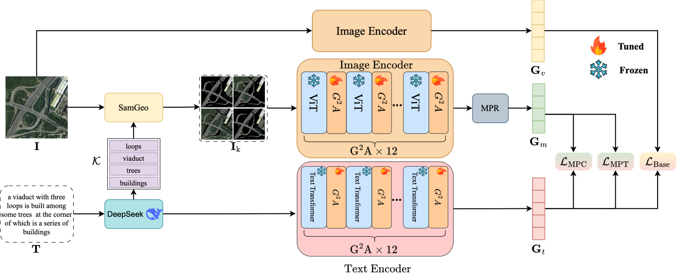
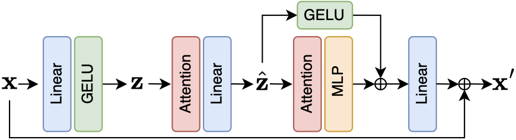

Vision-Language Pre-training (VLP) models like CLIP have significantly advanced Remote Sensing Image-Text Retrieval (RSITR). However, existing methods predominantly rely on coarse-grained global alignment, which often overlooks the dense, multi-scale semantics inherent in overhead imagery. Moreover, adapting these heavy models via full fine-tuning incurs prohibitive computational costs and risks catastrophic forgetting.
To address these challenges, we propose MPS-CLIP, a parameter-efficient framework designed to shift the retrieval paradigm from global matching to keyword-guided fine-grained alignment. Specifically, we leverage a Large Language Model (LLM) to extract core semantic keywords, guiding the Segment Anything Model (SamGeo) to generate semantically relevant sub-perspectives. To efficiently adapt the frozen backbone, we introduce a Gated Global Attention (G2A) adapter, which captures global context and long-range dependencies with minimal overhead. Furthermore, a Multi-Perspective Representation (MPR) module aggregates these local cues into robust multi-perspective embeddings.
The framework is optimized via a hybrid objective combining multi-perspective contrastive and weighted triplet losses, which dynamically selects maximum-response perspectives to suppress noise and enforce precise semantic matching. Extensive experiments on the RSICD and RSITMD benchmarks demonstrate that MPS-CLIP achieves state-of-the-art performance with 35.18% and 48.40% mean Recall (mR), respectively, significantly outperforming full fine-tuning baselines and recent competitive methods.


Performance comparison with state-of-the-art methods on RSICD and RSITMD benchmarks.
| Methods | Text Retrieval | Image Retrieval | mR | ||||
|---|---|---|---|---|---|---|---|
| R@1 | R@5 | R@10 | R@1 | R@5 | R@10 | ||
| Train from Scratch | |||||||
| KAMCL | 11.99 | 27.17 | 38.33 | 7.78 | 25.23 | 40.02 | 25.08 |
| VGSGN | 8.33 | 21.87 | 32.57 | 6.53 | 23.13 | 36.85 | 21.55 |
| DOVE | 8.66 | 22.35 | 34.95 | 6.04 | 23.95 | 40.35 | 22.72 |
| PIR-ITR | 10.89 | 26.17 | 37.79 | 7.17 | 25.07 | 41.06 | 24.69 |
| CLIP-based | |||||||
| SkyCLIP | 6.59 | 16.10 | 26.53 | 7.14 | 22.34 | 34.29 | 18.83 |
| CLIP-Adapter | 7.11 | 19.48 | 31.01 | 7.67 | 24.87 | 39.73 | 21.65 |
| Linear-probe CLIP | 8.46 | 24.41 | 37.72 | 7.81 | 25.89 | 42.47 | 24.46 |
| UniAdapter | 12.65 | 30.81 | 42.74 | 9.61 | 30.06 | 47.16 | 28.84 |
| PE-RSITR | 14.13 | 31.51 | 44.78 | 11.63 | 33.92 | 50.73 | 31.12 |
| Full-FT CLIP | 13.54 | 30.83 | 43.46 | 11.55 | 33.14 | 49.83 | 30.39 |
| HarMA | 16.36 | 34.48 | 47.74 | 12.92 | 37.17 | 53.07 | 33.62 |
| MPS-CLIP (Ours) | 18.30 | 37.42 | 50.32 | 13.28 | 37.04 | 54.73 | 35.18 |
| Methods | Text Retrieval | Image Retrieval | mR | ||||
|---|---|---|---|---|---|---|---|
| R@1 | R@5 | R@10 | R@1 | R@5 | R@10 | ||
| Train from Scratch | |||||||
| KAMCL | 16.81 | 34.96 | 47.12 | 14.60 | 41.86 | 59.86 | 35.87 |
| VGSGN | 14.16 | 34.96 | 50.66 | 13.23 | 42.57 | 63.41 | 36.50 |
| DOVE | 16.81 | 36.80 | 50.93 | 12.20 | 49.93 | 66.50 | 37.73 |
| PIR-ITR | 18.36 | 42.04 | 55.53 | 13.36 | 44.47 | 61.73 | 39.25 |
| CLIP-based | |||||||
| SkyCLIP | 10.18 | 25.44 | 35.62 | 10.88 | 33.27 | 49.82 | 27.54 |
| CLIP-Adapter | 12.83 | 28.84 | 39.05 | 13.30 | 40.20 | 60.06 | 32.38 |
| Linear-probe CLIP | 17.02 | 33.12 | 48.35 | 13.33 | 41.80 | 63.89 | 36.25 |
| UniAdapter | 19.86 | 36.32 | 51.28 | 17.54 | 44.89 | 56.46 | 39.23 |
| PE-RSITR | 23.67 | 44.07 | 60.36 | 20.10 | 50.63 | 67.97 | 44.47 |
| Full-FT CLIP | 24.16 | 47.12 | 61.28 | 20.40 | 50.53 | 68.54 | 45.33 |
| HarMA | 25.81 | 48.37 | 60.61 | 19.92 | 53.27 | 71.21 | 46.53 |
| MPS-CLIP (Ours) | 27.88 | 51.11 | 61.06 | 22.61 | 56.59 | 71.15 | 48.40 |
Visual comparisons on remote sensing image-text retrieval.
Detailed analysis of component effectiveness. Click tabs to view details.
Effectiveness of the [CLS] token compared to Mean Pooling.
| Method | Text R@1 | Img R@1 | mR |
|---|---|---|---|
| Mean Pool | 14.27 | 10.52 | 31.37 |
| [CLS] Token | 18.30 | 13.28 | 35.18 |
Impact of Attention (Attn) and Gating mechanisms within the G2A adapter.
| Attn | Gate | mR | Params (M) |
|---|---|---|---|
| × | × | 34.34 | 0.49 |
| ✓ | × | 34.59 | 0.51 |
| × | ✓ | 34.99 | 0.49 |
| ✓ | ✓ | 35.18 | 0.51 |
Effect of aggregating keyword-guided sub-perspectives via the MPR module.
| MPR Module | Text R@1 | Img R@1 | mR |
|---|---|---|---|
| w/o MPR | 17.38 | 13.36 | 34.50 |
| w/ MPR | 18.30 | 13.28 | 35.18 |
Contribution of Multi-Perspective Contrastive (MPC) and Weighted Triplet (MPT) losses.
| LBase | LMPC | LMPT | mR |
|---|---|---|---|
| ✓ | 34.50 | ||
| ✓ | ✓ | 34.65 | |
| ✓ | ✓ | 34.74 | |
| ✓ | ✓ | ✓ | 35.18 |
@article{MP_Subimage_CLIP_2025,
title = {Multi-Perspective Subimage CLIP with Keyword Guidance for Remote Sensing Image-Text Retrieval},
author = {Li, Yifan and Wang, Shiying and Huang, Jianqiang},
journal = {International Conference on Multimedia and Expo (ICME)},
year = {2025}
}